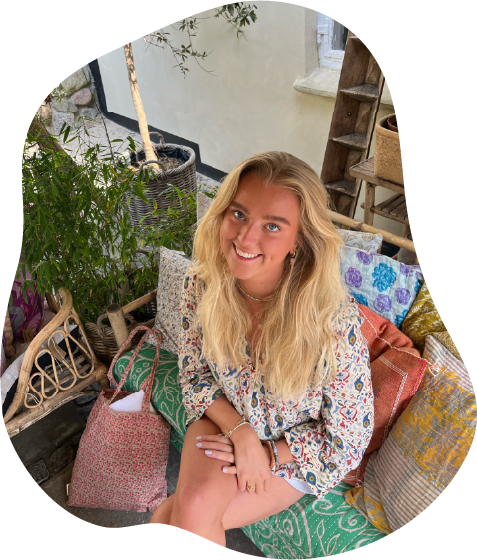
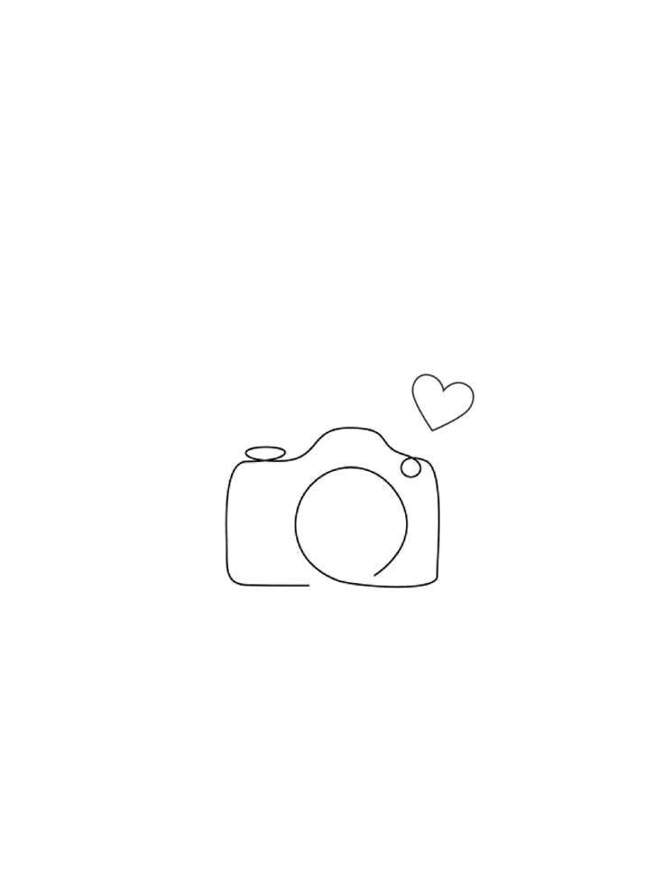
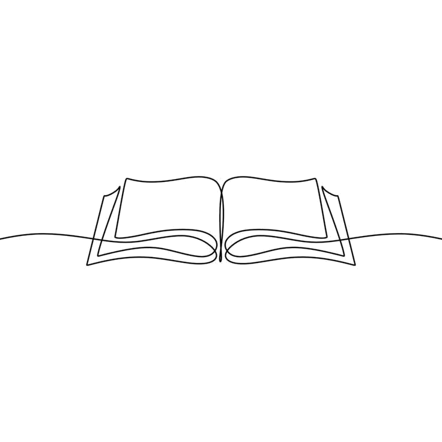

Mediekonsulent
Kafton Media
2025–nu
OM MIG
LÆS MERE
Jeg hedder Caroline Kallerup og læser Multimediedesign på KEA
Jeg er 22 år gammel og bor i København. Udover studiet elsker jeg at bruge tid sammen med venner og familie. Om det er til træning, på gåture, shoppeture, på caféer, bare der er solskin elsker jeg at være selskab.
Jeg har altid gået op i æstetik og er en nysgerrig og glad pige der brænder for at skabe brugervenlige og æstetiske løsninger – både visuelt og funktionelt.
Min tilgang til design er minimalistisk og stram, og jeg lægger stor vægt på struktur, formidling og detaljen.

ERHVERVSERFARING
Tjener
Den Danske Frimurerorden
2024–nu
Lærervikar og pædagogmedhjælper
Vedbæk Skole
2022–2024
Køkkenmedhjælper
Plejecenter Skovbrynet
2019–2022
UDDANNELSESERFARING
Multimediedesign
2025–nu
1. semester af
Produktionsteknolog
2024
STX Nærum Gymnasium
2019–2022
Glamsdalens Idrætsefterskole
2018–2019
Nordsjællands Grundskole
og Gymnasium
2008–2019
Hvad jeg har lært af 1. semester på Multimediedesign

På 1. semester har jeg opnået en grundlæggende forståelse for design og udvikling af digitale brugeroplevelser.
Jeg har lært at arbejde med både idéudvikling, grafisk design og teknisk opbygning af hjemmesider. Gennem de fem temaer har jeg fået indsigt i designprincipper, brugeradfærd, kodning i HTML og CSS samt værktøjer som Figma, Illustrator og VS Code.
Samarbejde, feedback og iteration har været en vigtig del af processen – og jeg har lært, hvordan man går fra idé til færdigt produkt.